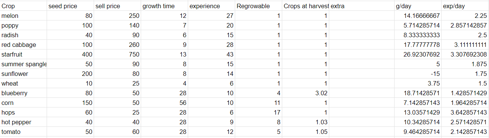

Summer is the most profitable season by far, if you're ready that is. With planning and preparation, you can make millions in any given summer, but your first one will probably be a bit more low key (it is supposed to be a relaxing game after all! Not that I ever seem to be able to relax when I play it) If you played spring well, you should have some quality sprinklers year one, which means we're in business! Go ahead and use this info to plan your season out! And remember, variety can be nice sometimes if you're getting bored of starfruit!
Everyone knows going in that starfuit is the best. What surprised me is that blueberries are still the best if you can't get starfuit. I've heard for a while that melons are better because blueberries were nerfed, but doing the math, they're still the best! Flowers are finally decent if you want to start using beehouses, and hops give amazing energy if you're lacking food.